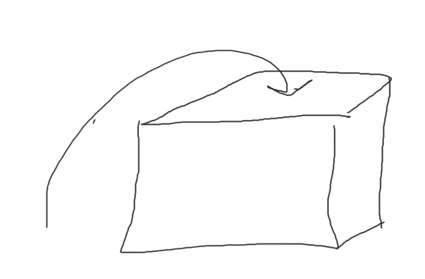

Variables are Python’s way of storing information. This is why Python variables are similar to boxes.
With boxes, we put a label on the box to detail what’s inside, and we put certain items inside the box. We can also look inside the box and tell what’s inside.
For example, let’s take a box and label it “socks,” and put socks inside. It’s a sock box! When we look inside the box, we see socks. So, if our friend asks us what’s inside the “socks box,” we can look inside and say “socks!”
Now, Python variables act much the same way. In Python, we first make a variable (a box,) and we give that variable a name.
Next, we put an item (only one) inside the variable. The main items we can put in the variable are integers, strings, and booleans. Now, those words sound a bit complex, but what they really mean is numbers, words, and “trues and falses.”So when we consider what items go inside Python variables, just remember numbers, words, and “trues and falses.” (There are also lists, but we will get back to those.)
Let’s start with Python numbers, numbers are what the name implies: 1, 2, 3, 4, 5, 6, 7, 8, 9, 10, 11, 12, 13, 14, 15, 16, 17, 18, 19, 20, 21, 22, and forever until infinity. And so, let’s put the number 5 in a variable named num. In Python, we type: num = 5
Next, let’s look at Python words. Python words are denoted by quotation marks, these things: “ ”. It’s just like when you’re quoting somebody’s words. So, in Python, let’s put the word hellostrong> inside a variable named wordstrong>. In Python, we type: word = “hello”
Lastly, let’s play with Python “trues and falses.” Trues and falses work in Python like how they work in English. For example, if I ask somebody, “is the sun a star?” they would reply “True.” Or, perhaps if I ask them, “Is 5 more than 10?” they would reply “False.” In short, there are only two states, True or False. So, in Python, we can put either in a variable.
For example, to put True in a variable named question, we type: question = True and to put False in a variable named quire, we type: quire = False.

But, be careful, if you give two variables the same name, Python will only replace the old one. So, if you put num = 5, and later put num = 7, the num variable becomes 7 and 5 is discarded. The same goes for all types of variables.
Okay, but Python, as with boxes, can also look inside variables. With the “print” command, Python tells us what’s inside a variable (a box).

In Python, just type: print(), and then inside the parentheses, these things: (), put the name of the variable you want Python to look inside; for me, I want Python to look inside the “num” variable. So, I’ll type: print(num). And lastly, click the run button, then Python will tell you what’s inside the chosen variable.
Python can even take things out of variables and interact with them. For example, if you type print(6 + 5), Python returns 11. Well, we can do the same thing with number variables. First, make two different variables, one called num1 and the other called num2, and put numbers inside these variables. Next, type: print(num1 + num2). And, Python returns the result.